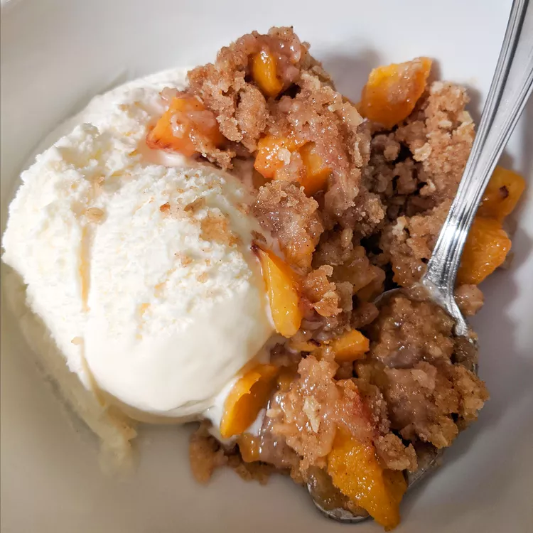

Juicy Peach Crisp

Description
This peach crisp recipe is made without oats, taking the simplicity of fresh peaches and turning them into a scrumptious dessert!
Ingredients
- 6 fresh peaches - peeled, pitted, and sliced
- ½ teaspoon almond extract
- 1 cup all-purpose flour
- 1 cup white sugar
- ¼ cup brown sugar
- ½ teaspoon ground cinnamon
- ¼ teaspoon salt
- ½ cup unsalted butter
Steps
- Preheat the oven to 375 degrees F (190 degrees C). Grease an 8-inch square baking dish.
- Place peach slices into the bottom of the baking dish and sprinkle with almond extract.
- Combine flour, sugar, brown sugar, cinnamon, and salt in a bowl. Cut the butter into the flour mixture with a pastry cutter until the mixture resembles crumbs; sprinkle over peaches in an even layer.
- Bake in the preheated oven until peaches are bubbling and topping is browned, about 45 minutes.